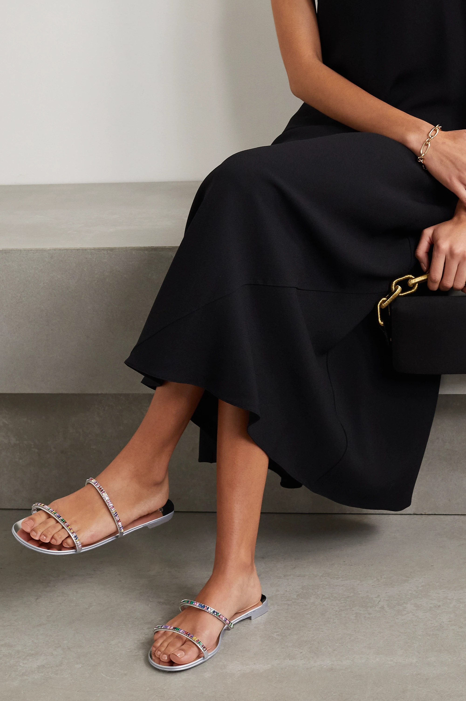
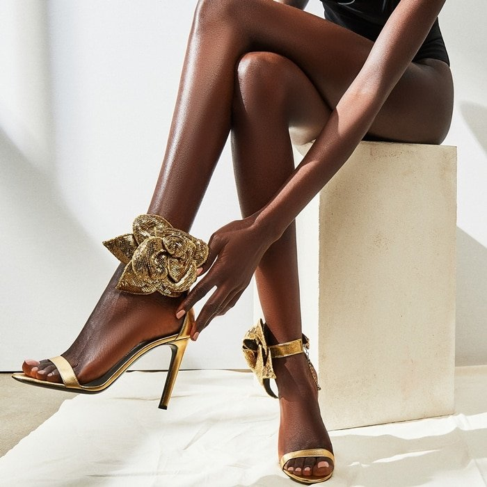
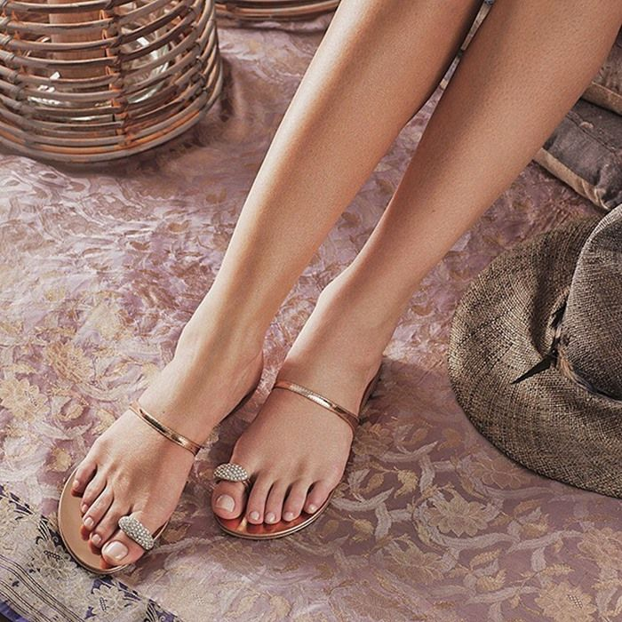
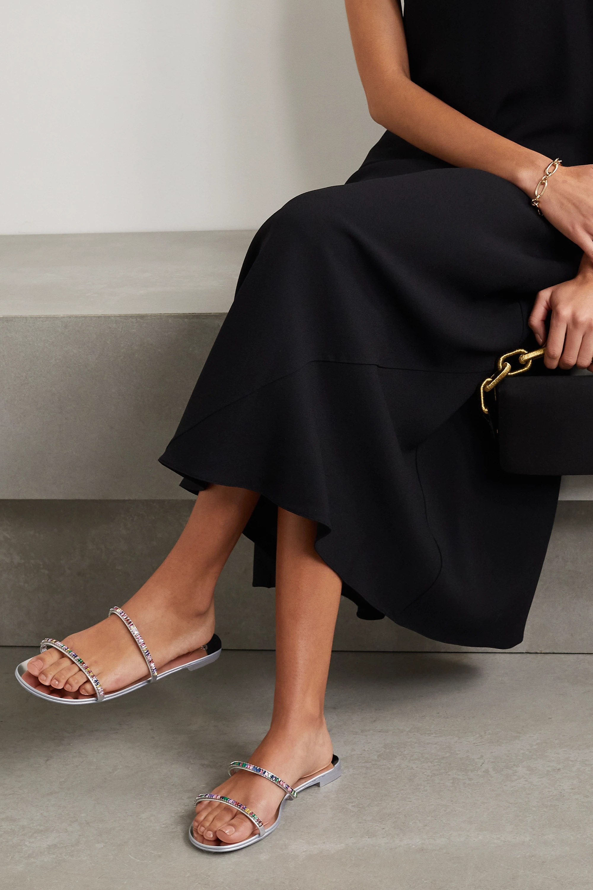
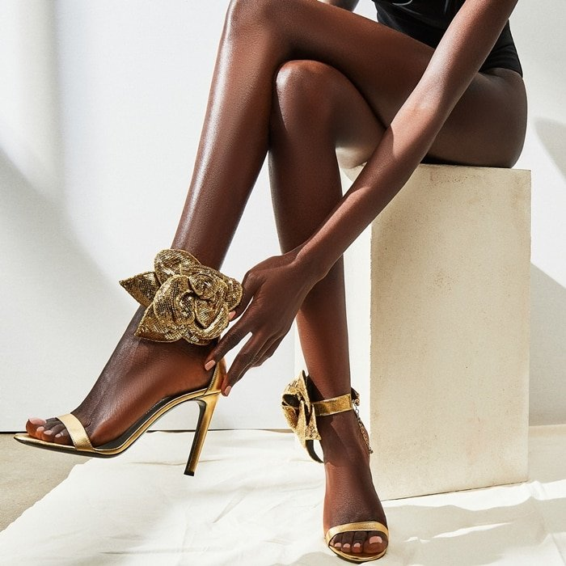
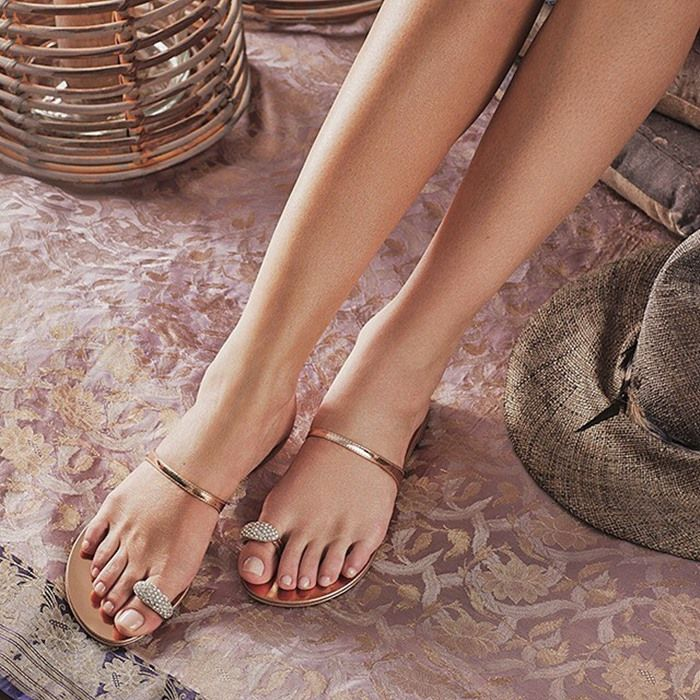
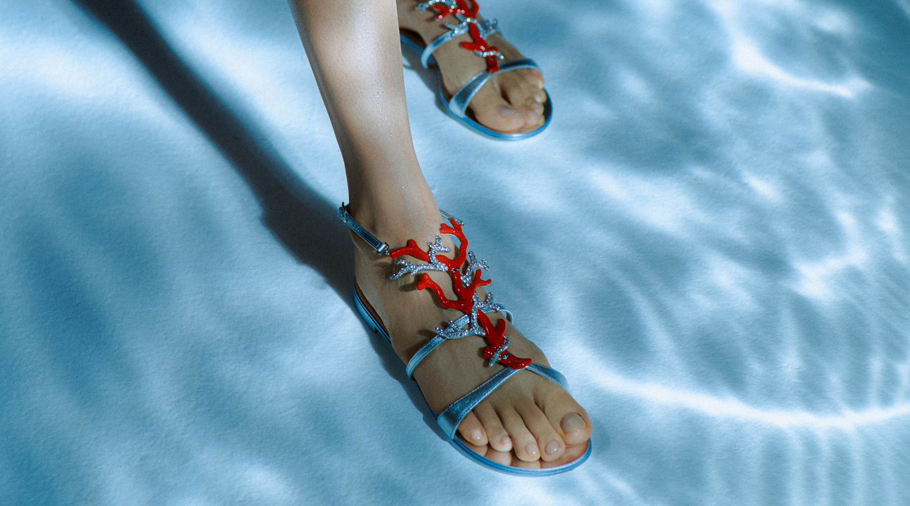
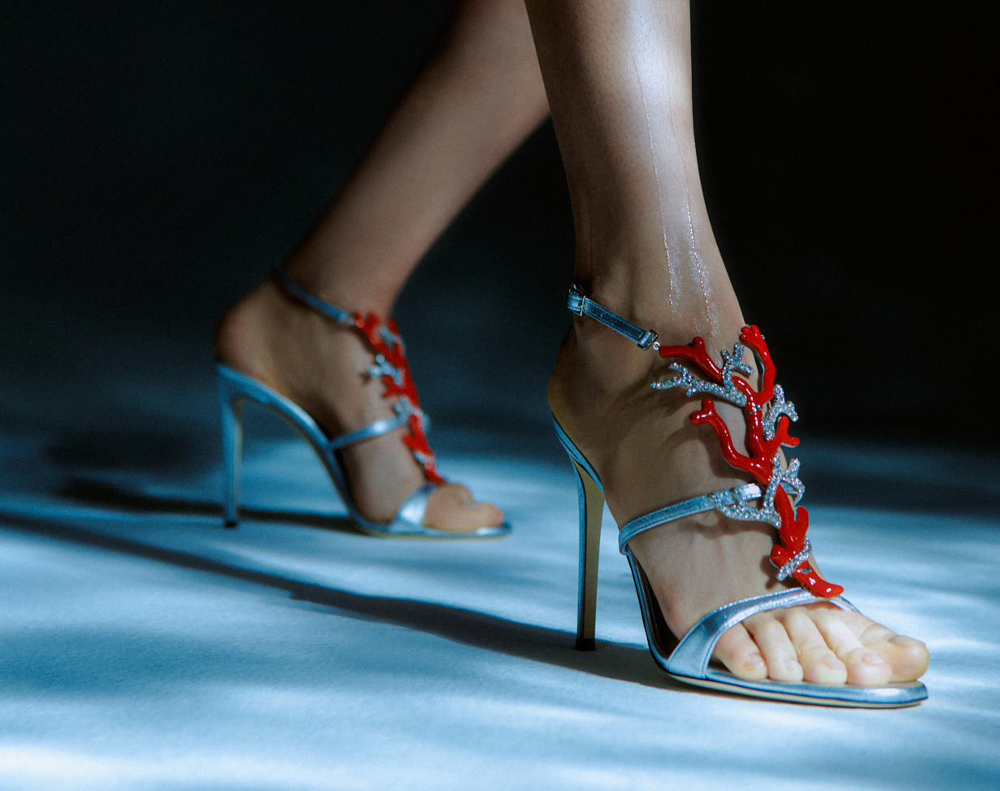

BY Santino Shoes
Buy at massimosantini
The Best Places to Buy Shoes Online for Convenient, Reliable Shopping
 



CROISETTE CRISTAL 50
Metallic Leather Sandals
Shoes
Discover the legendary style of Massimo Santini women's shoes.
Our collection boasts classic boots, comfortable lace ups, tasseled loafers,
summer sandals, and practical slip-ons.
Jewels of the Sea - The Giuseppe Zanotti Icons project returns with the 'Coralli'
Bringing the great blue sea and its colorful delights to women’s feet.
The Giuseppe Zanotti Icons project is back with an exclusive third drop.
MILAN – Bringing the great blue sea and its colorful delights to women’s feet.
The Giuseppe Zanotti Icons project is back with an exclusive third drop. Called Coralli,
the series is a summer story brought to life through two exquisitely crafted silhouettes.
Inspired by two archival styles—the Spipiott sandal (2004) and the Coralli wedge (2005)—the Coralli are intricately crafted,
richly embellished shoes that are once timeless and of-the-moment; playful and sophisticated.
In other words, the perfect pairs for summer’s return and women’s reawakening to glamour.

Jewels of the Sea
-
To celebrate the launch, the House is once again collaborating with artist and activist Laetitia Ky
. Known for her complex, ironic and often thought-provoking hair sculptures, Ky has created new pieces inspired by Jewels of the Sea.
“How can you not feel more confident when wearing these creations?” asks Laetitia Ky.
“The color palette, the imagination, the craft—they all come together in super chic shoes.”
To celebrate the launch, the House is once again collaborating with artist and activist Laetitia Ky.
Known for her complex, ironic and often thought-provoking hair sculptures, Ky has created new pieces inspired by Jewels of the Sea.
“How can you not feel more confident when wearing these creations?” asks Laetitia Ky.
“The color palette, the imagination, the craft—they all come together in super chic shoes.”
To celebrate the launch, the House is once again collaborating with artist and activist Laetitia Ky.
Known for her complex, ironic and often thought-provoking hair sculptures, Ky has created new pieces inspired by Jewels of the Sea.
“How can you not feel more confident when wearing these creations?” asks Laetitia Ky.
“The color palette, the imagination, the craft—they all come together in super chic shoes.”

© COPYRIGHT 2020 - 2022 GIUSEPPE ZANOTTI S.p.A. Via dell’Artigianato, 28 - 47030 S. Mauro
Pascoli (FC), enrolled at Business Register of Forlì Cesena n. REA FO – 238829, Company
Registration Number/ TAX Number/VAT 02067600409, share capital fully paid up Euro 520.000 T.
+39 0541 810911 F. +39 0541 933100 registered e-mail address:
comunicazioni@pec.giuseppezanotti.com